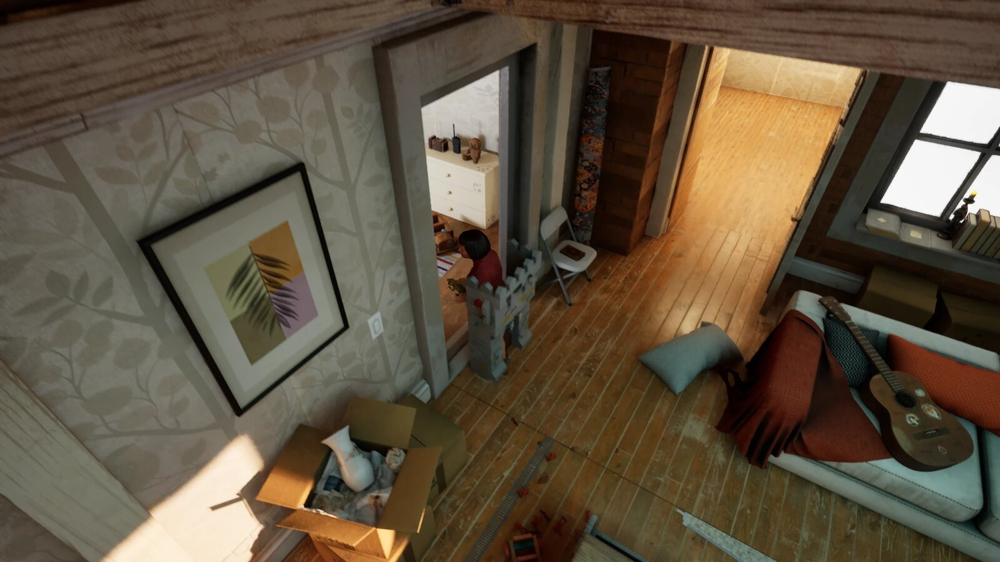
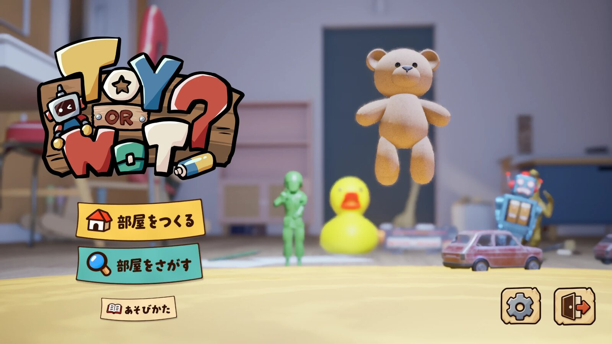
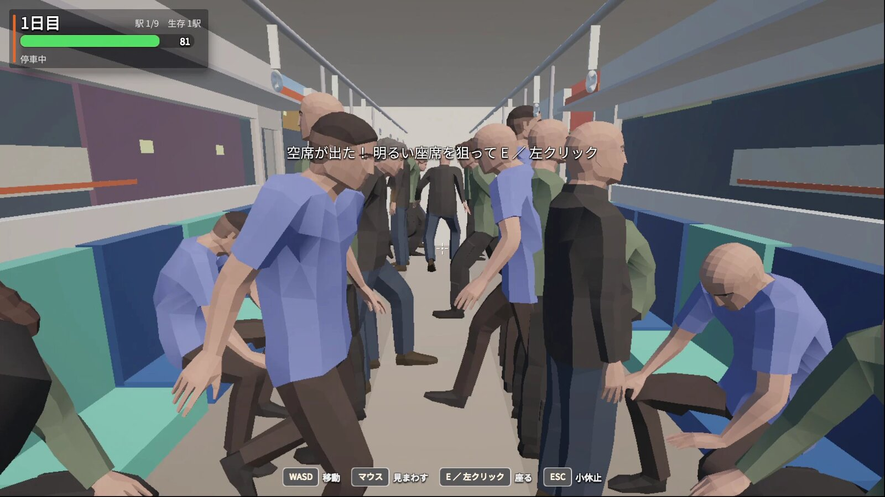

UE5.8C++3人チーム
Toy or Not ?
凝視されたら動けない。人間とおもちゃに分かれて遊ぶ非対称オンライン対戦。
- 寸劇からタイトルへつなぐ演出を制作
- おもちゃ箱の観戦テレビを実装
- 凝視の判定範囲を画面比に合わせて制限
Steamストア公開中 ↗ ／ 2027年2月発売予定
GAME PROGRAMMER PORTFOLIO
▶ PRESS ANY KEY / TAP TO START

Featured projects
担当した実装と、その理由をまとめています。

凝視されたら動けない。人間とおもちゃに分かれて遊ぶ非対称オンライン対戦。
Steamストア公開中 ↗ ／ 2027年2月発売予定

個人制作 UnityRoomで遊ぶ ↗ UnityRoomで遊ぶ ↗
UnityRoomで遊ぶ ↗
More work
Experience
ゲーム開発を始めてから、作品と仕事で担当範囲を広げてきました。
Unity / C#を学び始める。初のゲームジャム作品『Front Slimers』では敵キャラクターを担当。
『はっきよいよい つっぱって！』を2日間で制作。
企画・実装・UI/UX・UGSランキングまで一人で担当。
Unity1weekでMediator / UniTask / UI統合、TeamBで既存機能の修正を経験。
個人制作『座れ！サラリーマン！』を発表。UE5 / C++の学習を開始。
3人チームで開発。寸劇とタイトル、観戦テレビ、画面比の判定などを担当。
UE5・C++でチーム開発したオンライン対戦かくれんぼ。
About me
ゲームに夢中になる時間が、私に現実とは違う自由をくれました。今度は自分が、遊ぶ人の心を動かす、もう一つの世界を作りたいです。
意見が分かれたとき、多くのプレイヤーにとって何が良いかを考えて、自分の案を通すか、作り直すかを選べるエンジニアを目指しています。
『Toy or Not ?』を自分から立ち上げ、3人でSteamストア公開まで進めました。コードを理解してから共有できるよう、チームに /quiz を導入しました。
寸劇の吹き出しは「見づらい」という声で字幕に変更。タイトルで光を当てると固まる演出も、遊ぶとバグに見えたため、クリックするとおもちゃが踊る形に作り直しました。
変更後の字幕を見る →今は『Toy or Not ?』の実装を出発点に、カメラ・音・アニメーションを深めています。
Contact
作品や開発について、面接・インターン・制作のお話をお待ちしています。